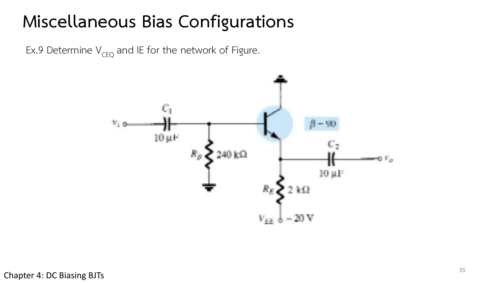
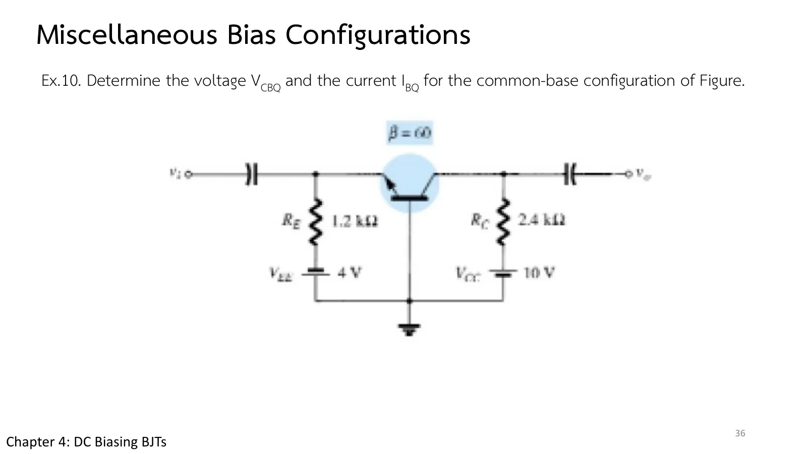

วงจรที่คอลเล็กเตอร์ต่อกราวด์ตรง ๆ แต่เบสกับอิมิตเตอร์อยู่ต่ำกว่ากราวด์ทั้งคู่ และวงจรที่หากระแสอิมิตเตอร์ได้โดยไม่ต้องรู้ β เลย ทั้งสองอยู่ในหน้านี้ และทั้งสองไม่ได้เอาสัญญาณออกที่คอลเล็กเตอร์ วงจรแรกคือตัวตามแรงดันที่อิมิตเตอร์ (emitter follower หรือคอลเล็กเตอร์ร่วม) ที่ใช้แหล่งจ่ายลบ \(V_{EE}\) ใต้ \(R_E\) วงจรที่สองคือวงจรเบสร่วม (common base) ที่ป้อนสัญญาณเข้าที่อิมิตเตอร์และใช้สองแหล่งจ่าย หน้านี้มีภาพจำลองตัวตามแรงดันที่ปรับ \(V_{EE}\), \(R_B\), \(R_E\), β ได้ (ส่วน A) Ex.9 Ex.10 และแบบฝึกเพิ่ม (สไลด์บทที่ 4 หน้า 35–36 · Boylestad หัวข้อ 4.7–4.8)
A circuit whose collector is tied straight to ground while its base and emitter both sit below ground, and a circuit whose emitter current you can find without knowing β at all: both are on this page, and neither takes its signal off the collector. The first is the emitter follower (common collector), with a negative supply \(V_{EE}\) under \(R_E\); the second is the common-base circuit, fed at the emitter from two supplies. This page has an emitter follower whose \(V_{EE}\), \(R_B\), \(R_E\), β you can change (section A), Ex.9, Ex.10, and more practice (chapter 4 slides, pp. 35–36; Boylestad sections 4.7–4.8).
เริ่มจากวงจรของ Ex.9: คอลเล็กเตอร์ต่อกราวด์ตรง ๆ (ไม่มี \(R_C\)) ส่วนล่างของวงจรอยู่ที่ \(-V_{EE}\) แรงดันที่เบสและอิมิตเตอร์จึงติดลบ (คอลเล็กเตอร์อยู่ที่ 0 V) เลื่อน \(R_B\) หรือ β แล้วดูว่าอิมิตเตอร์ตามเบสอยู่ห่าง 0.7 V เสมอ กราฟล่างคือ \(I_C\) เทียบกับ β ซึ่งราบลงเมื่อ \((\beta + 1)R_E\) ใหญ่กว่า \(R_B\)
Start from the circuit of Ex.9: the collector goes straight to ground (no \(R_C\)) and the bottom of the circuit sits at \(-V_{EE}\), so the base and emitter voltages are negative (the collector sits at 0 V). Move \(R_B\) or β and watch the emitter follow the base, always 0.7 V below it. The lower graph is \(I_C\) against β, which flattens once \((\beta + 1)R_E\) exceeds \(R_B\).
สไลด์หน้า 35 คือวงจรเดียวกับที่เพิ่งลองในส่วน A: \(R_B\) = 240 kΩ จากเบสลงกราวด์ และ \(R_E\) = 2 kΩ ลงไปที่ −20 V วงเบสเดินจากกราวด์ผ่าน \(R_B\) รอยต่อ และ \(R_E\) ลงไปถึง \(-V_{EE}\) จึงได้สมการรูปเดียวกับไบแอสอิมิตเตอร์ที่มี \(V_{EE}\) แทน \(V_{CC}\) ก่อนเปิดเฉลย ลองเดาเครื่องหมายของ \(V_B\) และ \(V_E\)
Slide p. 35 is the circuit you just tried in section A: \(R_B\) = 240 kΩ from the base to ground and \(R_E\) = 2 kΩ down to −20 V. The base loop runs from ground through \(R_B\), the junction and \(R_E\) down to \(-V_{EE}\), so its equation has the emitter-bias form with \(V_{EE}\) in place of \(V_{CC}\). Before opening the solution, guess the signs of \(V_B\) and \(V_E\).

คอลเล็กเตอร์ต่อกราวด์ \(R_B\) = 240 kΩ จากเบสลงกราวด์ \(R_E\) = 2 kΩ จากอิมิตเตอร์ไป \(V_{EE}\) = −20 V, β = 90 จงหา \(V_{CEQ}\) และ \(I_{EQ}\)
Collector grounded, \(R_B\) = 240 kΩ from base to ground, \(R_E\) = 2 kΩ from the emitter to \(V_{EE}\) = −20 V, β = 90. Determine \(V_{CEQ}\) and \(I_{EQ}\).
แผงข้างภาพคือแรงดันเทียบกราวด์ของสามขา ลองตอบก่อน
The side panel shows the three terminal voltages to ground. Try it first.
วงจรที่สองเปลี่ยนขาที่ใช้ร่วม: สไลด์หน้า 36 ต่อเบสลงกราวด์ ป้อนสัญญาณเข้าที่อิมิตเตอร์ ซึ่งต่อผ่าน \(R_E\) = 1.2 kΩ ไปยัง \(V_{EE}\) = 4 V และเอาสัญญาณออกที่คอลเล็กเตอร์ ซึ่งต่อผ่าน \(R_C\) = 2.4 kΩ ไปยัง \(V_{CC}\) = 10 V วงอิมิตเตอร์มีแค่ \(V_{EE}\), \(R_E\) และรอยต่อ 0.7 V ลองหา \(I_E\) ก่อน แล้วสังเกตว่าไม่ได้ใช้ β เลย
The second circuit changes the common terminal: slide p. 36 grounds the base, feeds the signal in at the emitter, which returns through \(R_E\) = 1.2 kΩ to \(V_{EE}\) = 4 V, and takes it out at the collector, which returns through \(R_C\) = 2.4 kΩ to \(V_{CC}\) = 10 V. The emitter loop holds only \(V_{EE}\), \(R_E\) and the 0.7 V junction: find \(I_E\) first and notice that β never comes into it.

วงจรเบสร่วม \(V_{EE}\) = 4 V, \(R_E\) = 1.2 kΩ, \(V_{CC}\) = 10 V, \(R_C\) = 2.4 kΩ, β = 60 จงหา \(I_E\), \(I_{BQ}\), \(V_{CE}\) และ \(V_{CBQ}\)
A common-base circuit with \(V_{EE}\) = 4 V, \(R_E\) = 1.2 kΩ, \(V_{CC}\) = 10 V, \(R_C\) = 2.4 kΩ, β = 60. Determine \(I_E\), \(I_{BQ}\), \(V_{CE}\) and \(V_{CBQ}\).
ภาพจำลองคือวงจรเบสร่วมของหน้า 3.2 กับทรานซิสเตอร์แบบ 0.7 V, β = 60 (สไลด์ถามเฉพาะ \(V_{CBQ}\) และ \(I_{BQ}\) ตำราถามครบสี่ค่า) ลองตอบก่อน
The simulation is the common-base circuit of page 3.2 with a 0.7 V, β = 60 transistor (the slide asks only for \(V_{CBQ}\) and \(I_{BQ}\); the book asks for all four). Try it first.